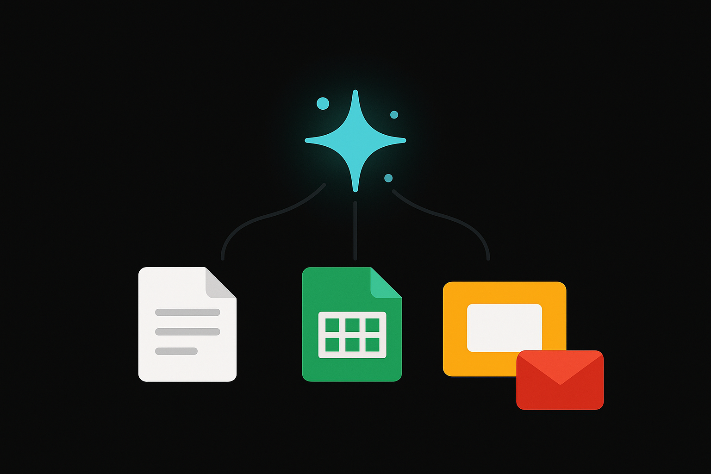
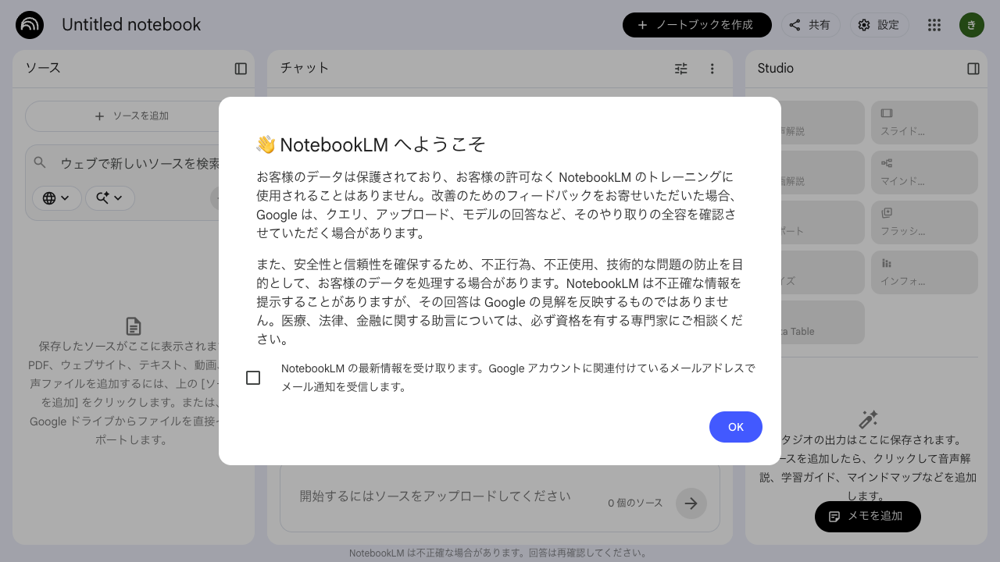

Course 15 / Layer 3 -- 統合マスター
Gemini & Google Workspace AI活用マスターGoogle Workspaceの各ツール(Docs, Sheets, Slides, Gmail)にGeminiを統合し、日常業務を加速します。NotebookLMによる社内資料分析、Gem/Canvas/Deep Researchによる高度調査、Imagen 3による画像生成まで。データ分析レポートを一気通貫で作成する総合ハンズオン付きです。
初級-中級 約8時間(480分) 8 Sections + 2 Review ハンズオン比率 69%
Section 01 -- 45min(講義25 + ハンズオン20)
Gemini for Workspace概要

Geminiとは
GeminiはGoogleが開発した大規模言語モデルファミリーです。ChatGPTやClaudeと同じカテゴリに属しますが、Google独自の強みがあります。Google検索との深い統合、YouTube動画の内容理解、Google Workspaceとのネイティブ連携。この3点が他のAIツールとの差別化ポイントになります。
単体チャットとしてのGeminiは gemini.google.com からアクセスできます。ただしこのコースの主眼は、Geminiの能力をWorkspaceの各ツール上で直接呼び出す「統合型」の使い方にあります。
プランと機能の違い
プラン 月額 主な機能 想定利用者
Gemini(無料版) $0 チャット、基本的な生成、画像分析 個人利用、お試し Gemini Advanced $20 Gemini 2.5 Pro、Deep Research、Canvas、Gem、100万トークン 個人のパワーユーザー Gemini Business $24/ユーザー Workspace統合、管理者コントロール、データ保護 中小企業チーム Gemini Enterprise $36/ユーザー 全Business機能 + NotebookLM Plus、高度なセキュリティ 大規模組織
Tips: Business/Enterprise が必要な場面
個人学習であれば無料版かAdvancedで十分です。業務で使う場合はBusiness以上を選んでください。Workspace統合(Docs/Sheets/Slides上でのGemini呼び出し)はBusiness/Enterpriseプランでのみ利用できます。無料版のGeminiチャットとWorkspace統合は別物です。
Workspace統合の全体像
%%{init:{'theme':'dark','themeVariables':{'primaryColor':'#00A5BF','primaryBorderColor':'#007A8F','primaryTextColor':'#e8e8e8','lineColor':'#00A5BF','secondaryColor':'#1a1a1a','background':'#141414','mainBkg':'#1a1a1a','nodeBorder':'#00A5BF'}}}%%
graph TB
G["Gemini AI Engine"]
D["Google Docs Geminiが各Workspaceツールに横断的にAI支援を提供する構造
各ツールでできること一覧
ツール Gemini機能 典型的な用途
Docs Help me write / Help me refine 下書き生成、校正、トーン変更、翻訳 Sheets Help me organize / Help me analyze データ整理、数式生成、グラフ作成、傾向分析 Slides Help me create / Image generation プレゼン一括生成、スライド追加、画像生成 Gmail Help me write / Summarize 返信文生成、長文メールの要約 Meet Take notes / Summarize リアルタイム文字起こし、会議要約
管理者による有効化
Workspace管理者が Google Admin Console から Gemini を有効化する手順は以下の通りです。
admin.google.com にログインする「アプリ」 から 「Googleサービス」 を開く
「Gemini for Google Workspace」を選択し、利用するOU(組織部門)を指定する
サービスのステータスを「オン」に変更する
個人のGoogleアカウントでAdvancedプランに加入している場合は管理者設定は不要です。
ハンズオン: Geminiの起動確認 20min
目標: Geminiチャットにログインし、各Workspaceツールでの起動方法を確認する
パート1: Geminiチャットの基本操作(10min)
gemini.google.com にGoogleアカウントでログインしてください以下のプロンプトを送信して、Geminiの応答を確認してください
私はGoogle Workspaceを業務で使っています。GeminiをWorkspaceと連携して使うメリットを、ツール別に3つずつ箇条書きで教えてください。コピー
回答の中で特に業務に活かせそうな機能を1つメモしてください
パート2: Workspaceツールでの起動確認(10min)
Google Docsを新規作成してください
文書内で「Help me write」のボタン、またはサイドパネルのGeminiアイコンを探してください
Google Sheetsも新規作成し、同様にGeminiの呼び出し方を確認してください
Slides も同様に確認してください
Tips
Workspace統合が利用できない環境(無料版やAdvanced)では、Geminiチャット(gemini.google.com)に文書やデータを貼り付けて処理する方法で代替できます。このコースのハンズオンも、その方法で実施可能です。
Section 02 -- 55min(講義20 + ハンズオン35)
NotebookLM -- 社内資料AI分析
NotebookLMとは
NotebookLM はGoogleが提供するAIノートブックサービスです。複数のソースをアップロードすると、AIがそれらの内容を横断的に分析し、質問への回答や要約を行います。ChatGPTやClaudeにファイルを添付するのと似ていますが、決定的な違いがあります。NotebookLMはアップロードされたソースの範囲内だけで回答するため、ハルシネーションが起きにくい設計になっています。
対応ソースの種類
ソース種別 形式 留意点
PDF .pdf スキャン画像PDFはOCR精度に依存 Google Docs Googleドライブから選択 共有権限が必要 テキスト コピー&ペースト 文字数上限あり(約50万文字/ソース) Webページ URL貼り付け 動的に生成されるページは取得できない場合あり YouTube動画 URL貼り付け 字幕が存在する動画のみ
主な機能
要約 アップロードした全ソースの概要を自動生成。数百ページの資料を数行に圧縮して把握できます。
FAQ自動生成 ソースの内容から「よく聞かれそうな質問と回答」を自動作成。社内ナレッジベースの下書きに有用です。
質疑応答 ソースの内容に基づいて質問に回答。出典箇所へのリンクが付くため、根拠を即座に確認できます。
Audio Overview ソースの内容を音声で要約してくれる機能。ポッドキャスト風の対話形式で内容を把握できます。通勤中の資料確認に向いています。
活用シーン
研究論文のレビュー -- 複数論文をアップロードし、共通する知見や矛盾点を抽出する会議資料の事前把握 -- 議事録や関連資料を投入し、論点を整理する競合分析 -- 各社のプレスリリースやIR資料から比較情報を引き出す新人教育 -- 社内マニュアル群を投入し、QA対応可能なナレッジボットとして使う

NotebookLMのメイン画面。ソースをアップロードすると左パネルに一覧表示され、右側のチャットで質問できる
Tips: Audio Overviewの仕組みと活用パターン
Audio Overviewは、アップロードしたソースの内容をAIが分析し、二人の話者によるポッドキャスト風の音声対話に変換する機能です。単なる読み上げではなく、内容を噛み砕いて説明する構成になっている点が特徴的です。活用パターンとしては、会議前の予習(30分の資料を10分の音声で把握する)、論文の音声要約(通勤中に新着論文のエッセンスを耳から吸収する)、研修資料の復習(ハンズオン後にAudio Overviewで要点を再確認する)の3つが実務で効きます。生成には数分かかるため、朝一番に生成ボタンを押しておき、移動中に聴くという運用が自然です。
注意: 機密情報の取り扱い
NotebookLMにアップロードしたデータは、Googleのサーバー上で処理されます。社内の機密情報を扱う場合は、自社のデータ取り扱いポリシーを確認してください。Enterprise プランではデータ保護のポリシーが強化されています。
ハンズオン: NotebookLMで資料分析 35min
目標: ノートブックを作成し、ソースのアップロード、FAQ生成、Audio Overviewまでを体験する
演習1: ノートブック作成とソースアップロード(10min)
notebooklm.google.com にアクセスし、新しいノートブックを作成してください以下のいずれかをソースとしてアップロードしてください
自社の公開プレスリリースや製品資料(PDF)
業務に関連するWebページのURL(2-3本)
練習用: 総務省 情報通信白書 のPDF
ソースの読み込みが完了したら、自動生成された要約を確認してください
演習2: FAQ自動生成(10min)
NotebookLMの「ノートブックガイド」パネルを開いてください
「よくある質問」の生成ボタンを押してください
生成されたFAQの内容を確認し、ソースのどの部分を根拠としているかをクリックして確認してください
追加で自分の質問を入力してみてください
このソースの中で、最も重要な3つのポイントを根拠付きで教えてください。コピー
演習3: Audio Overview生成(15min)
ノートブックガイドの「Audio Overview」セクションを開いてください
「生成」ボタンを押して、音声要約の作成を開始してください(生成に数分かかります)
生成された音声を再生し、内容が正しくまとめられているか確認してください
音声の長さ、話し方のスタイル、カバーされている論点を記録してください
Audio Overviewが生成できない場合
Audio Overviewは一部のアカウントや地域で利用制限がある場合があります。生成できない場合は、チャット欄で以下のプロンプトを使い、テキストベースの要約で代替してください。
「アップロードした資料の内容を、ポッドキャストの台本形式(二人の対話形式)で要約してください。」
Section 03 -- 50min(講義15 + ハンズオン35)
Docs x Gemini -- 文書作成の自動化
Help me write
Google Docs上でGeminiに文書の下書きを依頼する機能です。メニューバーの「Help me write」ボタン、またはドキュメント内で直接呼び出せます。ゼロから文章を書き始めるのが苦手な人にとって、最初の一歩を大幅に加速してくれます。
ただし出力はあくまで下書きです。業務文書として使うなら、事実確認とトーン調整は必須になります。
Help me refine
既に書かれた文章を選択して改善を依頼する機能です。具体的には以下の操作が可能です。
Shorten(短縮) -- 冗長な文章を簡潔にするElaborate(拡張) -- 簡潔すぎる内容を詳しく書き直すRephrase(言い換え) -- 表現を変えて読みやすくするFormalize(フォーマル化) -- カジュアルな文体をビジネス調にSummarize(要約) -- 長文を要約する
翻訳と校正
文書全体または選択範囲の翻訳も可能です。Google翻訳とは異なり、文脈を考慮した自然な翻訳が得られます。校正機能では文法やスペルだけでなく、論理構造の改善提案も行います。
Help me writeの実践プロンプト例
Help me writeの出力品質はプロンプトの具体性に比例します。「提案書を書いて」では一般的な文章が出てくるだけですが、読者・目的・構成・トーンを明示すると実用に耐える下書きが得られます。以下の3パターンを参考にしてください。
提案書の作成
以下の条件でDX推進の社内提案書を作成してください。
対象読者: 経営会議メンバー(非エンジニア)
背景: 紙ベースの稟議プロセスに月40時間/部門のコストが発生
提案内容: ワークフローツールの導入(kintone想定)
構成: 課題→提案→費用対効果→導入スケジュール
トーン: データで説得するスタイル、感情的な表現は避ける
分量: A4 1.5ページコピー
議事録の構造化
以下の会議メモを構造化された議事録に変換してください。
出力フォーマット:
- 会議概要(日時、参加者、目的)
- 決定事項(箇条書き)
- 未決事項(担当者と期限つき)
- 次回アクションアイテム
メモにない情報は推測せず「記載なし」としてください。
---
(ここに会議メモを貼り付け)コピー
社内通知の作成
以下の条件で社内通知文を作成してください。
件名: オフィス移転のお知らせ
発信元: 総務部
対象: 全社員
内容: 7月1日付で本社を現在地から新オフィス(同市内)に移転
盛り込む情報: 新住所、移転日、引越し作業日(業務停止期間)、各自の準備事項、問い合わせ先
トーン: 丁寧かつ簡潔、箇条書き多めコピー
Tips: Geminiチャットでの代替方法
Workspace統合が使えない環境でも、Geminiチャットに文書内容をコピー&ペーストして「この文章をフォーマルなビジネス調に修正してください」と指示すれば同等の結果が得られます。
ハンズオン: Docsでの文書作成と改善 35min
目標: 提案書の下書き生成、既存文書の改善、議事録整理、校正+翻訳を体験する
演習1: 提案書の下書き生成(10min)
Google Docsを新規作成してください
Gemini(またはGeminiチャット)に以下のプロンプトを送信してください
以下の条件で社内提案書の下書きを作成してください。
テーマ: 社内会議のオンラインハイブリッド化
対象読者: 部門長クラス
構成: 背景、現状の課題、提案内容、期待効果、スケジュール
トーン: ビジネスフォーマル、簡潔
分量: A4 1ページ程度コピー
生成された下書きをDocs上に貼り付けてください
内容を読み、事実関係や自社の状況に合わない部分を修正してください
演習2: 既存文書の改善(10min)
演習1で作成した提案書の「背景」セクションを選択してください
以下の改善を順番に試してください
Elaborate(拡張): より詳しい背景説明に
Formalize(フォーマル化): よりフォーマルなトーンに
Shorten(短縮): 3行以内に圧縮
各結果を比較し、最も適切なバージョンを採用してください
演習3: 議事録の整理(10min)
以下のような雑多なメモをDocsに貼り付けてください(実際の会議メモがあればそれを使ってください)
以下の会議メモを構造化された議事録に整理してください。決定事項、未決事項、次回までのアクションアイテム(担当者+期限)を明確に分けてください。
---
4/1 定例ミーティング
田中:来週までに報告書まとめる
予算の件→鈴木さんが経理に確認中、来週回答もらえるらしい
新システム導入は5月目標で進める方向
佐藤:テスト環境の準備は4/10までにやる
マニュアル作成は外注する?→社内でやる方向で
次回4/8 同じ時間でコピー
演習4: 校正と翻訳(5min)
演習3で整理した議事録の一部を選択し、Geminiに英語への翻訳を依頼してください
翻訳結果が自然な英語になっているか確認してください
Review A -- 25min
復習A: NotebookLM + Docs 連携ハンズオン
Section 02で学んだNotebookLMと、Section 03で学んだDocs x Geminiを組み合わせます。資料分析から文書作成までの流れを通して体験してください。
復習ハンズオン: 資料分析からレポート作成 25min
目標: NotebookLMで資料を分析し、その結果をDocsでレポートにまとめる
NotebookLMで先ほど作成したノートブック(またはWebページのURLを2-3本追加したもの)を開いてください(3min)
以下のプロンプトでソースの分析結果を得てください(5min)
このソースの内容を以下の観点で分析してください。
1. 主要な論点(3-5個)
2. 各論点の根拠となる具体的なデータや事実
3. 見落とされている視点や不足している情報コピー
NotebookLMの回答をコピーし、Google Docsに貼り付けてください(2min)
Gemini(DocsまたはGeminiチャット)を使って、分析結果をビジネスレポート形式に変換してください(10min)
以下の分析結果を、上司向けの1ページレポートに再構成してください。
構成: エグゼクティブサマリ(3行)→主要発見事項→推奨アクション
トーン: 簡潔で結論先行型
---
(NotebookLMの分析結果をここに貼り付け)コピー
生成されたレポートを読み直し、自分の言葉で修正を加えてください(5min)
NotebookLMでソースを分析し、根拠付きの回答を得られた
分析結果をDocsに転記し、レポート形式に変換できた
AI生成文を自分の視点で修正・加筆できた
Section 04 -- 55min(講義20 + ハンズオン35)
Sheets x Gemini -- データ分析と可視化
Help me organize
Google Sheets上でGeminiにデータの整理方法を提案してもらう機能です。列の追加・分割、データのクリーニング、書式設定などを自然言語で指示できます。手作業で1時間かかるデータ整形が、一言の指示で完了する場面は少なくありません。
Help me analyze
データの傾向分析やグラフ生成を自然言語で依頼できます。「売上の月次推移をグラフにして」「前年比を計算して」といった指示に対して、適切なグラフ種類の選択から作成までを一括で行います。
数式生成
Sheetsの関数をすべて暗記している人は少数派でしょう。GeminiはVLOOKUP、SUMIFS、ARRAYFORMULA、IFSなどの複雑な関数を、自然言語の説明から自動生成します。
A列に日付、B列に売上額が入っています。月別の合計をD列に出す数式を作ってください。コピー
このような曖昧な指示でも、Geminiは =SUMIFS(B:B, MONTH(A:A), MONTH(D2)) のような関数を提案します。
ピボットテーブルの自動提案
データの集計に適したピボットテーブルの構成を提案してくれます。行・列・値に何を配置すればよいかをAIが判断するため、ピボットテーブルに不慣れな人でも分析結果を素早く得られます。
Geminiが生成できる関数の種類
Gemini in Sheetsは単純なSUMやAVERAGEだけでなく、実務で頻出する中〜上級関数も生成します。自然言語でやりたいことを伝えれば、適切な関数が返ってきます。
関数 用途 難易度
VLOOKUP / XLOOKUP 別テーブルからのデータ参照 中 SUMIFS / COUNTIFS 複数条件での集計 中 ARRAYFORMULA 配列数式(一括適用) 上 QUERY SQL風のデータ抽出・集計 上 IMPORTRANGE 他スプレッドシートからデータ取得 中 IFS / SWITCH 多分岐条件 中 UNIQUE + SORT 重複排除とソート 低 FILTER 条件に合うデータの動的抽出 中
自然言語 → 関数の対応例
自然言語での指示 生成される関数(例)
「B列の売上をC列の部門ごとに合計して」 =SUMIFS(B:B, C:C, "営業部") 「A列の商品コードをもとにD列の価格テーブルから単価を引っ張って」 =VLOOKUP(A2, D:E, 2, FALSE) 「A列からE列のデータで、C列が"完了"のものだけ抜き出して」 =FILTER(A:E, C:C="完了")
Tips: 大量データ時の注意点
Sheetsの行数上限は約1,000万セルです。大規模データの分析にはBigQueryやPythonを使う方が適切で、Gemini in SheetsはExcelレベルの日常分析が得意分野になります。
以下のサンプルデータをダウンロードして演習で使用してください。
ハンズオン: Sheetsでデータ分析 35min
目標: サンプルデータの整形、数式生成、グラフ作成、傾向分析を体験する
演習1: データ整形(10min)
ダウンロードしたサンプル売上データ.csvをGoogle Sheetsにインポートしてください
Gemini(またはGeminiチャットにデータを貼り付けて)に以下の整形を依頼してください
このスプレッドシートのデータを見やすく整形してください。
- ヘッダー行を太字にして背景色を付ける
- 売上額の列に通貨書式(円)を適用
- 月ごとに小計行を追加コピー
演習2: 数式生成(10min)
以下の計算を自然言語でGeminiに依頼してください
以下の数式を作成してください。
1. 製品カテゴリごとの売上合計(SUMIFS関数)
2. 前月比成長率(パーセント表示)
3. 全期間の売上平均と標準偏差コピー
Geminiが生成した数式をセルに貼り付けて動作確認してください
数式が正しく動かない場合は、エラーメッセージをGeminiに伝えて修正を依頼してください
演習3: グラフ作成(10min)
Geminiに以下の指示でグラフを作成してください
このデータから以下のグラフを作成してください。
1. 月別の売上推移(折れ線グラフ、製品カテゴリ別に色分け)
2. 製品カテゴリ別の売上構成比(円グラフ)コピー
生成されたグラフのタイトル、凡例、軸ラベルが適切か確認してください
演習4: 傾向分析レポート(5min)
Geminiチャットにデータ全体を貼り付け、以下のプロンプトで分析レポートを依頼してください
このデータの傾向を分析し、以下を含むレポートを作成してください。
- 売上が最も伸びているカテゴリとその要因の仮説
- 解約数の傾向と懸念点
- 来月の売上予測(簡易な推定でOK)コピー
Section 05 -- 45min(講義15 + ハンズオン30)
Slides x Gemini -- プレゼン自動生成
プレゼン一括生成
テーマを指定するだけで、表紙からまとめスライドまでを一括生成してくれます。「AI活用の社内提案プレゼンを10枚で」といった指示でスライド一式が出てきます。レイアウト、配色、画像配置もAIが判断します。
生成品質は「たたき台としては十分、そのまま本番投影するには不十分」という水準です。構成の骨格を手に入れて、そこから自社のデザインテンプレートや具体数値を差し込んでいく使い方が現実的でしょう。
スライド個別追加
既存のプレゼンに対して「この内容のスライドを1枚追加して」と指示することも可能です。途中に説明スライドを差し込みたい、Q&Aスライドを追加したいといった場面で役立ちます。
スピーカーノート生成
スライド内容に基づいて、発表用のスピーカーノート(台本)を自動生成します。プレゼンの練習用としても、本番のカンペとしても使えます。
画像生成(Imagen統合)
Slides上から直接Imagen(Googleの画像生成AI)を呼び出し、プレゼンに挿入する画像を生成できます。ストックフォトを探す手間が省けます。Imagenの詳細はSection 07で扱います。
注意: 自動生成プレゼンの品質
AIが生成するスライドは「情報の羅列」になりやすい傾向があります。「1スライド1メッセージ」の原則は人間が意識的に適用してください。文字が小さすぎるスライドや、要点が不明確なスライドはAIにとって苦手分野です。
ハンズオン: Slidesでプレゼン作成 30min
目標: テーマからスライド一式を生成し、個別追加とスピーカーノート生成を体験する
演習1: テーマからスライド一式を生成(10min)
Google Slidesを新規作成してください
Gemini(SlidesまたはGeminiチャット)に以下のプロンプトで依頼してください
「社内のAI活用推進計画」というテーマで、8枚のプレゼンスライドを作成してください。
構成:
1. 表紙
2. 背景と目的
3. 現在のAI活用状況
4. 3つの重点施策
5. 施策1の詳細
6. 施策2の詳細
7. 施策3の詳細
8. スケジュールとまとめ
デザイン: シンプル、ビジネス向け、青系の配色コピー
演習2: 個別スライド追加とレイアウト調整(10min)
生成されたプレゼンの「施策1の詳細」スライドの後に、補足スライドを1枚追加してください
施策1に関するROI試算のスライドを1枚追加してください。
導入コスト、期待削減時間、投資回収期間の3つをわかりやすく表現してください。コピー
追加されたスライドのレイアウトや文字サイズを手動で調整してください
演習3: スピーカーノート生成(10min)
各スライドのスピーカーノート欄に、Geminiで発表用の台本を生成してください
以下のスライド内容に対して、2分間の発表用スピーカーノートを書いてください。
聴衆は部門長クラスで、AIに詳しくない人が多い想定です。専門用語は避け、具体例を交えてください。
(スライドの内容をここに貼り付け)コピー
Review B -- 25min
復習B: Sheets分析結果からプレゼン作成
Section 04のデータ分析結果を、Section 05のSlidesプレゼン生成に接続します。分析とプレゼンの一連の流れを体験してください。
復習ハンズオン: データ分析プレゼン 25min
目標: Sheetsで分析した売上データをもとに、5枚のプレゼンスライドを作成する
Section 04で作成したグラフと分析レポートを手元に用意してください(2min)
Geminiに以下のプロンプトでプレゼンの下書きを依頼してください(8min)
以下のデータ分析結果をもとに、5枚のプレゼンスライドを作成してください。
構成:
1. 表紙(四半期売上レポート)
2. 売上推移のハイライト(折れ線グラフの説明)
3. カテゴリ別パフォーマンス(比較)
4. 課題と懸念点(解約数の傾向)
5. 来期に向けた提案
---
(Sheets分析結果やGeminiの分析レポートをここに貼り付け)コピー
生成されたスライドにSheetsのグラフを画像として挿入してください(5min)
スピーカーノートを追加してください(5min)
全体を見直し、不要なスライドの削除や内容修正を行ってください(5min)
Sheetsの分析結果をプレゼンのストーリーに変換できた
グラフをスライドに挿入できた
スピーカーノートを生成し、発表できる状態にした
Section 06 -- 55min(講義25 + ハンズオン30)
Gem / Canvas / Deep Research -- 高度な調査と分析
Gem(カスタムGemini)
GemはGemini Advanced/Business/Enterpriseで利用できるカスタマイズ機能です。特定の役割、指示、知識を事前に設定した「パーソナルAI」を作れます。ChatGPTのGPTs、ClaudeのProjectsに相当する機能と考えてください。
例えば「社内FAQボット」というGemを作り、回答のトーンや参照する情報範囲を事前に指定しておくと、毎回同じ指示を入力する手間がなくなります。
Gemの構成要素
名前 -- Gemの用途がわかる名前(例: 「営業メールアシスタント」)カスタム指示 -- Gemの振る舞いを定義するプロンプト知識ファイル -- 参照すべき資料をアップロード(任意)
Canvas(対話型ワークスペース)
CanvasはGemini上のドキュメント/コード編集ワークスペースです。チャットの右側にエディタが表示され、コードや文書をリアルタイムで編集しながらAIと対話できます。ChatGPTのCanvasやClaudeのArtifactsと同等の位置付けです。
コード生成の場合、Canvasは部分的な修正指示に対応します。「3行目のfor文をmap関数に変えて」「エラーハンドリングを追加して」といった細かい修正を、全体を再生成せずに適用できるのが利点です。
Deep Research
Deep ResearchはGemini Advancedの目玉機能です。指定したテーマについて、複数のWebソースを自動で巡回し、情報を収集、構造化されたリサーチレポートを生成します。人間が3-4時間かけて行うWeb調査を、数分で完了させます。
%%{init:{'theme':'dark','themeVariables':{'primaryColor':'#00A5BF','primaryBorderColor':'#007A8F','primaryTextColor':'#e8e8e8','lineColor':'#00A5BF','secondaryColor':'#1a1a1a','background':'#141414','mainBkg':'#1a1a1a','nodeBorder':'#00A5BF'}}}%%
graph LR
A["調査テーマ入力"] --> B["検索計画の Deep Researchの処理フロー。テーマを入力するだけで出典付きレポートが生成される
Tips: Deep Researchの効果的な使い方
曖昧なテーマ(例: 「AIについて調べて」)では散漫なレポートになります。「2025年の日本国内RPA市場規模とAI統合の動向を、IDC/ガートナー/矢野経済研究所の調査データを中心に調査してください」のように、範囲・ソース・観点を絞ると精度が上がります。
Tips: Deep Researchの出力品質を上げるコツ
3つのテクニックが効きます。1つ目は調査テーマの具体化。「生成AIの導入状況」ではなく「従業員1,000人以上の製造業における生成AI導入率と主な用途」まで絞ると、焦点の合ったレポートが出ます。2つ目は対象期間の指定。「2024年1月〜2025年12月のデータに限定してください」と明記すれば、古い情報が混入しにくくなります。3つ目は出典の信頼性フィルター。「政府機関、大手調査会社(IDC、ガートナー、矢野経済研究所)、上場企業のIR資料を優先し、個人ブログは除外してください」と指定することで、レポート全体の信頼性が底上げされます。
Deep Researchの制限事項
1日の利用回数に上限があります(Advancedプランで1日あたり数回程度。上限はGoogleが随時調整しており、明確な公開数値はありません)
出力の長さに制限があり、テーマが広すぎると表面的な記述になります。調査観点を3-5個に絞ることで、各項目の深さを確保してください
リアルタイム性には限界があります。直近数時間以内のニュースは反映されない場合があり、速報性が求められる調査には不向きです
日本語ソースの網羅性は英語ソースに比べて劣る傾向があります。日本市場の調査では「日本語の情報源を優先してください」と明示的に指定するのが有効です
ハンズオン: Gem/Canvas/Deep Research 30min
目標: 業務特化Gemの作成、Canvasでのコード生成、Deep Researchでの市場調査を体験する
演習1: 業務特化Gemを作成(10min)
gemini.google.com で「Gem」メニューを開いてください(Advanced以上が必要)以下のテンプレートを参考に、業務用Gemを1つ作成してください
名前: 営業メールアシスタント
カスタム指示:
あなたは営業チームのメール作成アシスタントです。
以下のルールに従ってください:
- 丁寧語を使用し、フォーマルなビジネスメールのトーンを維持する
- メールの目的(初回アプローチ/フォローアップ/提案/お礼)を確認してから作成する
- 件名は20文字以内で具体的に
- 本文は300文字以内を目安に簡潔に
- 必ず次のアクション(打合せ日程の提案など)を含めるコピー
作成したGemに「新規顧客へのフォローアップメールを書いて。先週の展示会で名刺交換した相手。」と指示し、出力を確認してください
演習2: Canvasでコード生成(10min)
Geminiチャットで以下のプロンプトを送信してください
PythonでCSVファイルを読み込み、月別の売上集計とグラフ表示を行うスクリプトを書いてください。
ライブラリはpandasとmatplotlibを使用。
日本語フォント対応も含めてください。コピー
Canvas上に表示されたコードを確認してください
「エラーハンドリングを追加して」「コメントを日本語で入れて」など、部分的な修正指示を試してください
演習3: Deep Researchで市場調査(10min)
Geminiチャットの入力欄で「Deep Research」モードを選択してください
以下のプロンプトで調査を開始してください
日本国内の生成AI導入状況について調査してください。
調査観点:
- 企業のAI導入率(業種別の差)
- 主な利用用途ランキング
- 導入における課題とボトルネック
- 今後1-2年の市場予測
信頼性の高い調査機関(総務省、IPA、矢野経済研究所等)のデータを優先してください。コピー
生成されたレポートの構成、出典の確認、データの鮮度を評価してください
Section 07 -- 45min(講義20 + ハンズオン25)
Imagen 3 -- 画像生成と資料ビジュアル
Imagen 3とは
Imagen 3はGoogleが開発した最新の画像生成モデルです。テキストの指示(プロンプト)から高品質な画像を生成します。GeminiチャットやGoogle Slides上から呼び出すことができ、プレゼン用のビジュアル素材やコンセプトイメージの作成に使えます。
DALL-E(OpenAI)やMidjourney と比較して、テキストの忠実な描画(看板や説明テキストの含まれる画像)に強みがあるとされています。
プロンプト設計のコツ
要素 説明 例
主題 何を描くか 「ビジネスチームがオフィスで会議をしている」 スタイル 画風・テイスト 「フラットイラスト風」「写真のようにリアルに」 構図 アングル・配置 「俯瞰で」「中央に人物を配置」 色調 カラーパレット 「青と白を基調に」「暖色系で」 ネガティブ条件 除外したいもの 「テキストなし」「ロゴなし」
プロンプトの書き方テンプレート
Imagenのプロンプトは5つの要素を順番に並べると安定した結果が出ます。すべての要素を毎回書く必要はありませんが、主題とスタイルは必須です。
[主題] + [スタイル] + [構図] + [色調] + [ネガティブ条件]
--- 記述例 ---
主題: オフィスでノートPCを使って作業する3人のビジネスパーソン
スタイル: フラットデザインのベクターイラスト、ミニマルな線画
構図: 横長16:9、3人を中央に等間隔で配置、背景にオフィス什器をシルエットで
色調: 白背景、アクセントにネイビーブルー(#1E3A5F)とライトグレー
ネガティブ条件: テキストなし、ロゴなし、写実的な表現なし、3D効果なし
--- 実際のプロンプト(1文にまとめる場合) ---
Flat vector illustration of three business professionals working on laptops in a modern office, minimal line art style, 16:9 horizontal composition with figures centered, navy blue and light gray color palette on white background, no text, no logos, no photorealistic elements.コピー
Tips: ビジネス資料向けの画像生成
プレゼンに挿入する画像は「フラットイラスト風、シンプル、ビジネスカジュアル、白背景」と指定すると統一感のある素材が得られます。写実的な画像は「不気味の谷」を越えられないケースが多いため、イラスト系がおすすめです。
制限事項
人物の顔写真 -- リアルな人物写真の生成は制限されています(安全性のため)ブランドロゴ -- 既存の企業ロゴの生成はできません著作権のあるキャラクター -- 既存のIP(知的財産)を再現する指示は拒否されますSynthID -- 生成画像には不可視の電子透かし(SynthID)が埋め込まれます
注意: AI生成画像の利用規約
生成画像を商用利用する場合は、Googleの利用規約を必ず確認してください。特に、生成画像を「実在の写真」として扱うことは規約違反になる場合があります。社外への資料で使う場合は「AI Generated」の注釈を入れることをおすすめします。
生成画像の商用利用に関する注意点
Gemini/Imagenで生成した画像の商用利用については、Google利用規約(Gemini Terms of Service)の「Generated Output」セクションに準拠します。2025年時点での主要ポイントは以下の通りです。
Gemini Business/Enterpriseプランで生成した画像は、Google利用規約の範囲内で商用利用可能です。無料版やAdvancedでの商用利用は規約をよく確認してください
生成画像にはSynthID(不可視の電子透かし)が自動埋め込みされます。これを意図的に除去する行為は規約違反の対象です
実在の人物に似せた画像の生成はそもそもフィルターで制限されていますが、万が一似た結果が出た場合、肖像権・パブリシティ権の問題は利用者側の責任になります
社外向けの資料やWebサイトでAI生成画像を使用する場合、「AI Generated Image」などの注釈を添えておくことを推奨します。法的義務ではなく信頼性の問題として、透明性が評価される場面が増えています
生成画像の著作権については各国の法整備が進行中で、確定した判例は限られています。生成画像をそのまま商標登録するのは現時点でリスクが高いと考えてください
ハンズオン: Imagen 3で画像生成 25min
目標: プレゼン用のイメージ画像を3枚生成し、Slidesに挿入する
Geminiチャット で以下の3つのプロンプトを順番に送信し、画像を生成してください(15min)
画像1: ヒーローイメージ
以下の条件で画像を生成してください。
主題: AIテクノロジーとチームワークを象徴するフラットイラスト
スタイル: ミニマルなフラットデザイン、ベクターイラスト風
色調: 青と白を基調、アクセントにオレンジ
構図: 中央にPCを囲むチーム、周囲にAI関連のアイコン(歯車、グラフ、クラウド)
条件: テキストなし、背景はグラデーションコピー
画像2: データ分析のイメージ
以下の条件で画像を生成してください。
主題: データダッシュボードとグラフが表示されたモニター
スタイル: アイソメトリック(等角投影)イラスト
色調: ダークブルーの背景に明るいアクセント
構図: 大きなモニターを中心に、小さなグラフやチャートが周囲に浮かぶ
条件: テキストなし、人物なしコピー
画像3: コラボレーションのイメージ
以下の条件で画像を生成してください。
主題: ドキュメントやスプレッドシートが空中に浮かび、光の線でつながっている
スタイル: クリーンでモダンなフラットイラスト
色調: 白背景、Google Workspaceのブランドカラー(青、赤、黄、緑)をアクセントに
構図: 中央に大きなドキュメントアイコン、周囲にシート、スライド、メールのアイコン
条件: テキストなしコピー
生成された画像をダウンロードしてください(3min)
Section 05で作成したプレゼン(またはReview Bのプレゼン)を開き、適切なスライドに画像を挿入してください(7min)
画像生成がうまくいかない場合
Imagenが利用できない場合や、安全フィルターにより生成が拒否された場合は以下を試してください。
プロンプトをより具体的に修正する(曖昧な指示は拒否されやすい)
人物の描写を避け、抽象的なコンセプト図にする
代替として Canva の無料素材を使用する
Section 08 -- 80min(講義10 + ハンズオン70)
総合ハンズオン: データ分析レポートを一気通貫で作成
ゴール
このコースで学んだ全ツールを組み合わせて、「四半期売上レポート」を一気通貫で作成します。NotebookLMでの資料分析から、Sheets分析、Docsレポート、Slidesプレゼン、Imagen画像生成までを一つのワークフローとして体験してください。
%%{init:{'theme':'dark','themeVariables':{'primaryColor':'#00A5BF','primaryBorderColor':'#007A8F','primaryTextColor':'#e8e8e8','lineColor':'#00A5BF','secondaryColor':'#1a1a1a','background':'#141414','mainBkg':'#1a1a1a','nodeBorder':'#00A5BF'}}}%%
graph LR
S1["Step1 8ステップで四半期レポートを完成させるワークフロー
総合ハンズオン: 四半期売上レポート 70min
目標: 8つのステップで、NotebookLMからPDF出力まで一貫したレポートを完成させる
Step 1: NotebookLMで既存資料を分析(10min)
NotebookLMで新しいノートブックを作成してください
以下のソースをアップロードしてください
自社の前期レポート(PDF)、または練習用に公開されているIR資料のURL
業界ニュースのWebページURL(2-3本)
以下のプロンプトで分析を実行してください
これらの資料から、四半期レポートに使えるデータポイントを抽出してください。
- 市場全体の動向
- 自社(またはこの組織)のポジション
- 注目すべきリスクや機会コピー
Step 2: Sheetsでサンプル売上データを分析(10min)
Section 04でダウンロードしたサンプル売上データ.csv(または自社データ)をSheetsで開いてください
Geminiに月別・カテゴリ別の集計と折れ線グラフの作成を依頼してください
前月比成長率を計算する数式を生成してください
Step 3: Docsで分析レポートの本文を生成(10min)
Google Docsを新規作成し、Geminiに以下の構成でレポートの下書きを依頼してください
以下の情報をもとに、四半期売上レポートの本文を作成してください。
構成:
1. エグゼクティブサマリ(3-5行)
2. 売上実績(月別・カテゴリ別のハイライト)
3. 主要指標の分析(成長率、解約率)
4. 市場環境(NotebookLM分析結果を反映)
5. 課題と次四半期の施策
---
(Sheetsの分析結果とNotebookLMの抽出データをここに貼り付け)コピー
Step 4: Deep Researchで市場動向の補足調査(10min)
GeminiのDeep Researchモードで、レポートの補足となる市場調査を実行してください
得られた情報のうち、レポートに引用できるデータをDocsに追記してください
Step 5: Slidesでプレゼン資料を自動生成(10min)
Docsのレポート内容をもとに、8-10枚のプレゼンを生成してください
各スライドが「1スライド1メッセージ」になっているか確認してください
Step 6: Imagen 3でビジュアル素材を生成+挿入(10min)
表紙用のヒーローイメージと、各セクションの装飾画像を1-2枚生成してください
生成画像をSlidesに挿入し、レイアウトを調整してください
Step 7: 全体レビュー+修正(10min)
Docsレポートを通しで読み、論理の飛躍や事実誤認がないか確認してください
Slidesプレゼンを先頭から順に確認し、ストーリーの一貫性を検証してください
Geminiに以下のレビューを依頼してください
以下のレポート/プレゼンの内容をレビューしてください。
確認観点:
- 論理的な矛盾や飛躍がないか
- 数値データの整合性
- 結論と提案の根拠が明確か
- 読者(経営層)にとって理解しやすい構成か
---
(レポートまたはスライド内容をここに貼り付け)コピー
Step 8: 共有設定+PDF出力(10min)
Docsの「共有」からレポートの共有設定を行ってください(閲覧権限/編集権限)
「ファイル」から「ダウンロード」で PDF形式を選択し、レポートをPDF出力してください
Slidesも同様にPDF出力してください
両方のPDFを確認し、印刷・配布に適したフォーマットになっているか最終確認してください
Tips: 成果物のポイント
この演習の主目的は「完璧なレポートを作ること」ではなく、Workspace横断でAIを活用する一連の流れを体験することにあります。80点の成果物を高速で作り、残り20点を人間の判断で仕上げるのがAI時代の働き方です。
NotebookLMで外部資料を分析し、データポイントを抽出できた
Sheetsでデータの集計・可視化ができた
Docsで構造化されたレポート本文を作成できた
Deep Researchで市場調査の補足情報を取得できた
Slidesでプレゼン資料を生成し、グラフや画像を挿入できた
Imagen 3でビジュアル素材を生成できた
全体レビューで論理の一貫性を確認できた
PDF出力と共有設定を完了できた
Course Catalog に戻る